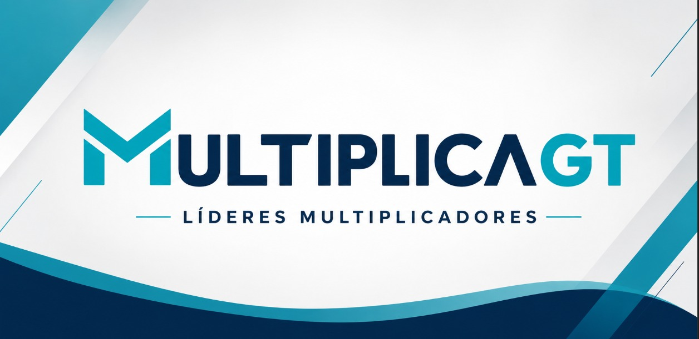

Desarrollamos equipos de alto desempeño mediante programas de liderazgo, cohesión organizacional y transformación cultural con impacto medible.
Nuestro enfoque combina diagnóstico organizacional, coaching, aprendizaje práctico y seguimiento estratégico para generar resultados reales dentro de las empresas.

Muchas empresas tienen talento… pero no liderazgo que lo conecte.
Las organizaciones actuales enfrentan desafíos que afectan directamente su desempeño. En Líderes Multiplicadores transformamos estos desafíos en oportunidades de crecimiento sostenible:
Un programa diseñado para transformar la cultura organizacional desde el liderazgo.
Es un programa de desarrollo organizacional enfocado en formar líderes capaces de generar impacto positivo en sus equipos y replicar el aprendizaje dentro de la empresa. Nuestro objetivo es crear organizaciones más humanas, resilientes, productivas y preparadas para el cambio.
Resultados visibles que transforman organizaciones. Nuestro enfoque busca generar impacto medible.
Mayor confianza entre equipos
Mejor comunicación organizacional
Reducción de conflictos internos
Líderes más conscientes y preparados
Incremento en colaboración interárea
Mayor adaptación al cambio
Reducción de rotación
Cultura organizacional más sólida
Adaptamos el programa según el tamaño y necesidades de cada organización.
Procesos prácticos y cercanos para fortalecer liderazgo y cultura organizacional.
Formación de líderes internos y desarrollo de equipos de alto desempeño.
Implementación estratégica por fases con enfoque en transformación cultural y sostenibilidad.
Trabajamos con organizaciones de distintos sectores. Cada implementación se adapta al contexto y cultura específica.
Más que capacitación, generamos transformación organizacional.
Empresas que transforman su cultura desde el liderazgo.
[Espacio para Video Testimonial de Empresa]
“A través del programa logramos fortalecer la comunicación y cohesión entre áreas.”
“El enfoque práctico permitió aplicar cambios reales desde las primeras semanas.”
“Los líderes comenzaron a replicar herramientas con sus equipos y vimos mejoras inmediatas.”